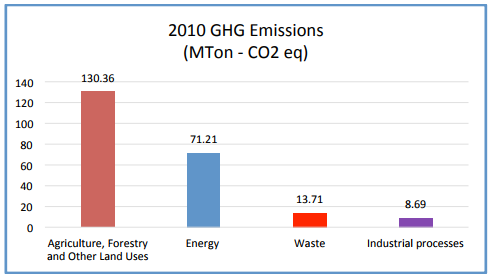
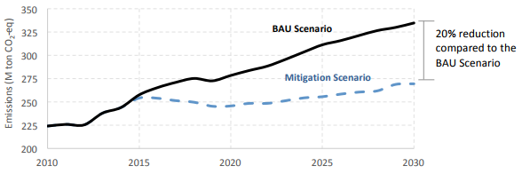

Pursuant to decisions 1/CP.19 and 1/CP.20 of the United Nations Framework Convention on Climate Change (UNFCCC), the Republic of Colombia is pleased to present its “Intended Nationally Determined Contribution” (iNDC).
Colombia is committed to fighting climate change, to the success of the UNFCCC negotiations and, particularly, to the adoption in December 2015, of a new legally binding agreement that will include commitments for all Parties during the COP 21.
According to the information generated by the Colombian Hydrology, Meteorology and Environmental Studies Institute (IDEAM), in the context of the country´s First Biennial Update Report[1] and the Third National Communication on Climate Change, in 2010 the country produced estimated greenhouse gas emissions (GHG) of 224 Mton of CO2eq, which represents just 0.46% of total global emissions for 2010[2]. The sectorial distribution of GHG in Colombia is as follows:
2 eq)">
Source: Colombian Biennial Update Report, IDEAM 2015
Notwithstanding the above, Colombia is highly exposed and sensitive to the impacts of climate change, given its diverse geography and economy, which is highly dependent on the climatic conditions and the use of natural resources.
The “New Climate Economy”, report led by the Global Commission on Economy and Climate, acknowledges that the current development rate is only sustainable if climate change risks are identified and faced. Therefore, for Colombia to develop and ensure its peace, equity and education objectives, and to sustain them in the long term, it is essential to identify and utilize, opportunities to increase competitiveness, productivity and efficiency following a low‐carbon pathway in the different sectors of the national economy. Likewise, it is important for the country to adapt to the impacts of climate change and build its development on a resilient foundation.
Therefore, Colombia deems it is fundamental for its iNDC to consider not only mitigation but also adaptation and means of implementation. For the country, the consolidation of its iNDC constitutes an opportunity to catalyze national and sub-national efforts through the planning of an innovative, competitive and low-carbon economy, which is resilient at same time.
The Republic of Colombia commits to reduce its greenhouse gas emissions by 20% with respect to the projected Business‐as‐Usual Scenario (BAU) by 2030.

Subject to the provision of international support, Colombia could increase its ambition from 20% reduction with respect to BAU to 30% with respect to BAU by 2030.
Deviation with respect to a projected BAU scenario
− 2030
− Based on the outcome of the climate negotiations in Paris in the COP 21, Colombia will consider communicating an indicative target for 2025, consistent with its 2030 target.
− Economy‐wide target
− It covers 100% of national emissions, according to the 2010 National Greenhouse Gas Inventory (INGEI 2010)
− It includes the 6 gases acknowledged by the Kyoto protocol: CO2, CH4, N2O, HFCs, PFCs, SF6
− It covers all emission sectors acknowledged by the Intergovernmental Panel on Climate Change (IPCC)
− It covers the entire national territory
The reference level is the projected BAU scenario. This scenario was developed in 2015, starting from the quantified inventory of GHG emissions in 2010 and includes the following emissions pathway:
− 2010: 224 Mton of CO2eq
− 2020: 278 Mton of CO2eq
− 2030: 335 Mton of CO2eq
− The National Greenhouse Gas Inventory for 2010 was prepared by IDEAM in the context of the First Biennial Update Report and the Third National Communication on Climate Change, according to the IPCC 2006 Guidelines.
− The Global Warming Potential (GWP) values used correspond to the Second Assessment Report of the IPCC (1995) for a 100‐year period.
− The AFOLU sector (agriculture, forestry and other land uses)[3] is included in the economy-wide target. The country has significantly improved the information for the characterization and quantification of emissions and removals in this sector, and will continue undertaking efforts to obtain better activity data, emission factors and projections. These efforts may lead to fine‐ tuning this information, i.e. in agro‐forestry and silvopastoral systems, which offer great mitigation potential in the country.
To estimate the BAU and emissions reductions scenarios, the carbon emission and removals from forest plantations and permanent crops are included; it excludes removals from natural forests that still remain as natural forests[4].
− The BAU scenario includes efforts to increase energy efficiency in the industrial, residential and commercial sectors, fugitive emissions due to the deceleration of oil and coal production, and deforestation trends under post‐conflict scenarios.
− The BAU scenario projections were independently made for each of the productive sectors, using the input of experts, based on macroeconomic assumptions, the analysis of current and prospective policies, and official information from IDEAM regarding the historical path of emissions. The information on deforestation was projected taking into account the 2013 ‐2017 Forest Reference Emissions Level for the Amazon region presented to the UNFCCC in December 2014. An aggregated analysis was then made to estimate the sectorial emissions projection at a national scale.
− The emission growth drivers at a sectorial level correlate to the following macro‐economic variables:
i. Urban, rural or aggregated population: projections of the National Statistics Administrative Department (DANE) for 2020 [5] and extrapolation up to 2050. The population distribution between rural and urban areas was estimated with UN methodologies [6] , based on the DANE projections for 2020.
ii. Gross Domestic Product (GDP): For the sectorial GDP projections, the Dynamic Product Input was used with adjustments in the model that allowed for modification of the contribution of the oil and coal sectors to national GDP, which affected the behavior of other sectors.
The growth expectation of each sector was reviewed with the National Planning Department (DNP) and other experts to define highly likely scenarios for Colombia up to 2050, using an average growth in per capita GDP of 3.1% per year. Furthermore, the government analyzed historical trajectories and current and prospective policies of the activity data.
With the objective of contributing to achieve the emissions reduction target, with a focus on cost- efficiency, Colombia will explore the use of market instruments (or other economic instruments) that guarantee the principles of transparency and environmental integrity, which result in real, permanent, additional, verified mitigation outcomes and prevent double counting.
Since 2012, within the framework of the Colombian Low-Carbon Development Strategy, analyses were performed with high technical rigor[7] to explore trajectories to decouple GHG emissions growth from national economic growth. These analyses included: dialogues with experts from public and private entities, academia, and civil society, with a view to identify and prioritize mitigation measures that were aligned with sectorial development objectives. These exercises and collective agreements formed the basis for developing the BAU and mitigation scenarios, which resulted in the national emission reduction target.
After this technical process, the government carried out a political process that included the participation of high‐level public actors (Ministers and Vice Ministers). Workshops and bilateral meetings were held between the Ministry of the Environment and Sustainable Development, sectorial Ministries and the National Planning Department.
The Colombian territory is characterized by a great diversity of ecosystems, determined by its geographical location and the physical and climatic characteristics of a country that has three mountain ranges, six natural regions and a large cultural diversity shaping the dynamics of numerous local communities. This, added to a climate‐dependent economy, makes the country highly vulnerable and sensitive to adverse impacts from climate change. The “La Niña” phenomenon, which took place in 2010‐ 2011, evidenced the impacts derived from climate change and variability on the country’s development. Damage and losses were estimated in USD$ 6 billion[8], over 3.2 million people were affected, 3.5 million hectares flooded and 845 primary and secondary roads closed, thus affecting the social and economic life of the country.
Adaptation and building resilience with respect to climate change are a priority for Colombia and represent a national security issue, which in the context of peace building will be even more relevant. These measures will be aimed at improving the well being of the entire population in territories well adapted to the climate, all of which will make Colombia a modern, innovative and competitive country globally.
The adaptation component is based on the country’s progress regarding adaptation within the National Adaptation Plan to Climate Change (PNACC in Spanish), which was formulated in 2011, and has been implemented through different territorial and sectorial efforts. The PNACC defines guidelines so that the country´s sectors and territories prioritize their actions aimed at reducing vulnerability, and include climate change and climate variability in their planning processes, through the formulation and implementation of territorial and sectorial adaptation plans. These efforts have focused on the Caribbean and Andean regions, as well as on the transport, housing, energy, agriculture and health sectors, as defined based on the information provided by the First and Second National Communications on Climate Change, and taking into account the damages and losses caused by La Niña phenomena in 2010-2011.
To date, Colombian entities have formulated 11 territorial adaptation plans to climate change, which have prioritized adaptation actions. These plans are the input for decision-makers to identify the vulnerability of the territory and define adaptation measures to be incorporated in the different development and spatial planning instruments. Furthermore, prioritized sectors corresponding to each Ministry are making progress in developing their sectorial adaptation plans. To date, there are plans for the agricultural sector and the primary road network.
The preparation of the Third National Communication on Climate Change is ongoing, and its input will provide updated information in greater detail, which will identify the areas of greatest vulnerability, with a view to prioritize and concentrate adaptation efforts.
Starting with the country’s progress through the PNACC and in line with efforts to address multidimensional poverty and inequality, the definition of the adaptation component of the iNDC included a participatory methodology, through workshops, working sessions and opportunities for dialog with experts from public and private entities, academia, and civil society.
It was defined that the country will focus its efforts to 2030 jointly with other global targets that contribute to increasing resilience, such as those of the Convention on Biological Diversity (CBD), the 2030 Development Agenda, and the UN Convention to Combat Desertification (UNCCD), as well as the Sendai Framework for Disaster Risk Reduction 2015‐2030, in the following strategic lines:
i. Synergies between adaptation and mitigation
ii. Socio‐ecosystem based adaptation
iii. Articulation between adaptation to climate change and risk management
iv. Adaptation of infrastructure and economic sectors of the economy
v. Incorporation of adaptation and resilience considerations in sectorial, spatial and development planning
vi. Strengthening of institutional capacities
vii. Promotion of education about climate change to catalyze behavioral changes
viii. Consolidation of peace territories taking into account climate change considerations
In this sense, and with a view to move towards economies, societies and ecosystems resilient to climate change impacts, the following are the specific prioritized actions by 2030 in Colombia:
i. 100% of the national territory covered by climate change plans formulated and being implemented
ii. A National System of Adaptation Indicators that allows the monitoring and evaluation of the implementation of adaptation measures
iii. Water resource management tools, which include climate change and variability considerations, will be in place for the country’s priority water basins
iv. Six (6) priority sectors of the economy (transport, energy, agriculture, housing, health, and trade, tourism and industry) will include climate change considerations in their planning instruments and will be implementing innovative adaptation actions
v.Strengthening of the awareness, training and public education strategy on climate change, focusing on different stakeholders of the Colombian society
vi. Delimitation and protection Colombia’s 36 “paramo“ areas (high mountain Andean ecosystems) (approximately 3 million hectares).
vii. Increase of more than 2.5 million hectares in coverage of newly protected areas in the National System of Protected Areas -SINAP‐, in coordination with local and regional stakeholders
viii. Inclusion of climate change considerations in projects of national and strategic interest -PINES‐
ix. 10 subsectors of the agricultural sector such as rice, coffee, livestock and silvopastoral, with improved capabilities to adapt appropriately to climate change and variability.
x. 15 of the country’s departments participating in the technical working groups on climate and agriculture, articulated with the national working group and 1 million producers receiving agro‐ climatic information to facilitate decision‐making in agricultural activities.
Colombia will contribute to the achievement of the global mitigation and adaptation goals and targets through plans, programs and initiatives that will facilitate the implementation of the necessary measures to achieve the INDC goals.
In this sense, Colombia will work towards:
i. A strategy with universities networks and research groups on subjects related to the main goals proposed as part of the mitigation and adaptation contributions.
ii. The creation of climate change innovation clusters, through the promotion of private investment, public private partnerships and foreign direct investment, with special emphasis on the scientific research and the knowledge and technology transfer.
iii. An agenda which would promote research, innovation and technological development in topics related to climate change.
iv. The active integration of national institutes and entities with the relevant UNFCCC mechanisms for technology transfer.
v. Share valuable knowledge with developing countries as part of its iNDC, regarding mitigation and adaptation to climate change, to the extent of the country’s capabilities and responding in particular to the Latin America and Caribbean region’s demands. This commitment aims at scaling up Colombia’s south‐south and triangular cooperation in this area, under the leadership of the organizations coordinating international cooperation in the country.
vi. Articulation of the National Government, with regional and local governments for the formulation and implementation in the medium and long‐term, of comprehensive climate change plans that foster competitive and sustainable cities.
vii. Continue to work together with the financial sector in order to contribute to the continuous improvement and development of solutions to the environmental and social challenges that the country faces. Colombia will continue to do so through joint actions between civil society, state and the private sector to achieve a sustainable development and the transition to low‐carbon, resilient development.
Finally, Colombia has been making progress in the identification of financing sources and the definition of a climate-finance strategy. However, it is recognized that financial resources are limited, which is why there is a need to increase the resources for financing adaptation and mitigation, as well as the development and transfer of technologies and the construction of institutional capacity at the different government levels.
Since 2010, Colombia has been developing policy instruments for climate, such as the Policy Document CONPES 3700, the Colombian Low Carbon Development Strategy (CLCDS), the National Strategy for Reducing Emissions from Deforestation and Forest Degradation (ENREDD +) and the National Adaptation Plan for Climate Change.
Additionally, since 2014, Colombia is formulating its National Climate Change Policy that aims to establish, in an articulated manner, mitigation and adaptation actions in the country by increasing resilience and reducing the carbon intensity in the economy.
In this sense, the National Development Plan (NDP) 2014-2018 includes a Green Growth strategy that indicates that "the climate change policy and draft bill, will be harmonized with the definition of a commitment on emissions reduction, adaptation and means of implementation that meets the criteria of robustness and fairness. This commitment will be submitted by Colombia under the global agreement that is being negotiated under the UNFCCC". Thus, these instruments allow the incorporation of climate change management in making development decisions in the medium and long term, and facilitate compliance with the objectives laid down in this iNDC.
Colombia’s iNDC seeks to give greater participation to the territories and sectors at the local level to prioritize and design their own climate change strategies, with a differentiated approach that takes into account regional circumstances. This aims at reconciling “bottom‐up” and “top‐down” strategies with a view to establishing enhanced coordination and participation of different stakeholders at the different government levels and links in the value chains of the different sectors.
To fulfill its mitigation goal, Colombia has prioritized mitigation measures through (8) Sectorial Mitigation Action Plans (SMAPs) that aim to maximize the carbon‐efficiency of economic activities at the national and sectorial levels and in turn contribute to social and economic development. These plans were developed under the CLCDS framework and were approved by the relevant sectorial Ministries (Agriculture and Rural Development, Commerce, Industry and Tourism, Transport, Housing, City and Territory and Mines and Energy). Mitigation measures have also been identified in the land use change sector, with processes under the REDD + Strategy and the Amazon Vision Program, among others.
Since 2013 the country has been working on developing a system for monitoring, reporting and verification for GHG emission reductions and climate financing. To this date, we have advanced in defining the objectives, mitigation measures and principles of the system. The country is committed to continue working legal, in this direction, especially in identifying and developing technical and institutional tools to facilitate monitoring progress towards achieving the iNDC.
Colombia´s iNDC is realistic, ambitious and equitable. It is based on national progress to date, takes into account national capacities and circumstances, and seeks to contribute to the objective of the Convention (established in Article 2).
Colombia has a very clean electricity generation matrix due to the high share of hydroelectricity (68% of the electricity generation in 2010) and an energy consumption well below the international electricity consumption averages. Energy consumption in Colombia in 2010 was 31 MBTU per person, while the world average in the same year was 74 and Latin America´s was 57 MBTU per person, according to the information from the US Energy Information Administration.
Colombia’s mitigation target seeks to achieve a per capita emissions level of nearly 4.6 Ton CO2eq/capita by 2030. This value would be even lower than the country’s per capita emissions in 2010 (4.8 Ton CO2eq/capita) and is consistent with the pathway established by the United Nations Environment Program (Emissions Gap Report, 2014) which encourages countries to achieve the goal of avoiding a global temperature rise of more than 2° C.
| BAU | iNDC | |
|---|---|---|
| Total estimated emissions in 2030 (Mton CO2eq) | 335 | 268 |
| Estimated per capita emissions in 2030 (Ton CO2eq/capita) | 5.8 | 4.6 |
Given the significant share of AFOLU emissions (emissions associated with livestock sub‐sectors, agriculture, forestry and other land use) in the national emissions profile (about 58% of the total), Colombia reaffirms its commitment to reduce deforestation in the country and to preserve important ecosystems such as the Amazon region, given its huge potential to contribute to the stabilization of greenhouse gases in the atmosphere.
Colombia is a middle income country. However, Colombia is a developing country that has important social, economic and environmental challenges ahead, as mentioned below. Among these challenges it is worth mentioning that the country is highly vulnerable to climate change. Considering both the capabilities and the development challenges that the country faces, Colombia proposes an iNDC that is ambitious and equitable.
Building peace in Colombia presents economic, social and environmental challenges for the country. Some of these challenges can be addressed through actions that at the same time have a potential to contribute to mitigation and adaptation to climate change. In the past, peace processes elsewhere in the world have been associated to negative impacts on the environment, due to, among other things, migration patterns that increase pressure on natural resources in the most vulnerable areas, often resulting in increased deforestation. These potential impacts have been taken into account in post-conflict scenarios in different regions.
Adaptation measures aiming at planning a rational use of ecosystem services that have been prioritized, such as water resources, allow for a better management and use of those resources and ensure the dynamics of supply and demand in the country. To include a climate change component in territories and sectors planning instruments, increases the adaptation capacity of the country, and in addition, contributes to increased resilience in face of events that may affect national development objectives.
Thus, mitigation and adaptation to climate change have the potential to facilitate the consolidation of peace territories where productive activities and land uses can, in a more equitable manner and with greater ownership of the territory, play a key role providing better development opportunities, in particular in rural communities.
Colombia, as a developing country, faces major socioeconomic challenges. According to the official figures of DANE, by 2014, the percentage of people in multidimensional poverty situation was 21.9% (this figure rises to 44.1% if we take into account only the rural population). For the same year, 28.5% of the population was found in a situation of monetary poverty (41.4% of the population in the case of the villages and rural centers scattered). It is clear that despite its progress, Colombia still faces major challenges in terms of overcoming poverty and inequality.
Structuring a resilient and low‐carbon economy is aligned with national development priorities including overcomig poverty in all its dimensions. Therefore, the country, as it has been doing in recent years, intends to actively participate in an ambitious and equitable way in the global efforts under the UNFCCC, taking into account the recommendations of the IPCC´s Fifth Assessment Report.
According to the National Unit for Disasters Risk Management, from 1998 to 2012, 90% of emergencies in Colombia were related to hydro‐climatological phenomenon. Therefore, it is a priority to articulate the mitigation processes and efforts to be performed, including through the identification of potential co- benefits and synergies with adaptation, in order to move towards resilient and sustainable climate scenarios. Mitigation actions reduce the risk of loss and damage as well as future adaptation costs; while adaptation measures have co-benefits in reducing emissions. Colombia assumes its iNDC as an opportunity to strengthen and build on the work done in the sectors and territories both in mitigation and adaptation to climate change. This will contribute to formulate policies, programs, plans and projects in an articulated way between the different productive sectors, public and private entities, non-governmental organizations and civil society in general.
The First Biennial Update Report is being consolidated and will be submitted to the Framework Convention of the United Nations in September 2015. ↩
Estimate made from an approximate data of global emissions of 49Gton according to the Fifth Assessment Report of the IPCC, Work Group III. ↩
For the analysis of land cover changes, Approach 2 was employed: Total Land-Use Area, Including changes between categories. For other land cover representations Approach 1 was employed: Total Land Use Area, no data on conversions between land uses, or a combination of both approaches. (IPCC 2006, Vol 4, Cap 3). ↩
The above will be subjected to the progress on the definition of accounting rules under the United Nations Framework Convention on Climate Change. ↩
Available at http://www.dane.gov.co/index.php/poblacion‐y‐demografia/proyecciones‐de‐poblacion ↩
United Nations, methods for urban and rural population projections. Manual VIII, ST/ESA/SER.A/55. New York, 1975. ↩
The analyses performed based on inclusive methodologies, based on the science of the MAPS Platform. ↩
DNP-IDB‐ECLAC. 2011. "Valuation and losses from winter season 2010-2011 (“La Niña”) in Colombia. Average exchange rate of $1.856 COP per dollar between October 2010 and May 2011 ↩